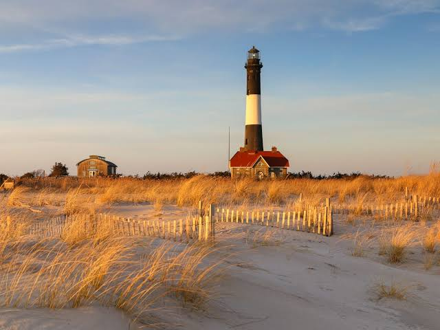
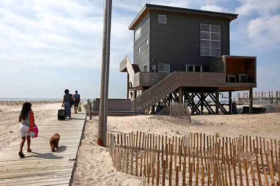
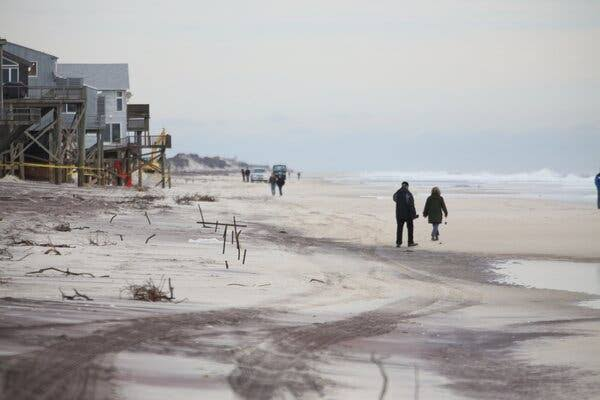

I went to Fire Island expecting a quiet beach weekend and left with sand in places I didn't know existed and a newfound respect for ferry schedules. No cars, no stress, just boardwalks, dunes, and the kind of ocean breeze that makes you forget you have a job. Highlights included sunset walks that made me briefly consider becoming a poet, and a wrong turn that somehow led to the best seafood I've had all year. If you've never been somewhere with zero traffic and unlimited shoreline, you're missing out.


We'll visit this park together, and take a lot more photos You don't believe me, here's a link:
Adventures of Ireland Park